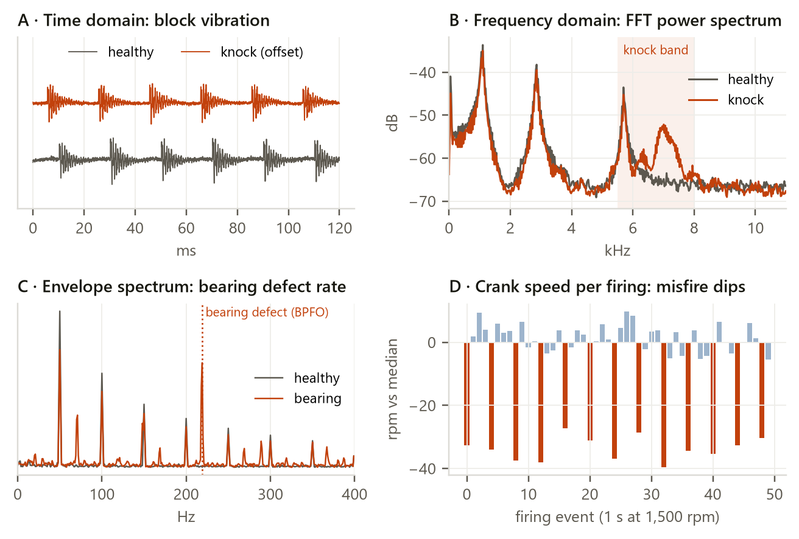
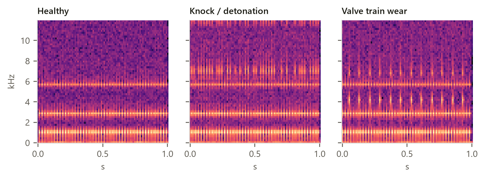
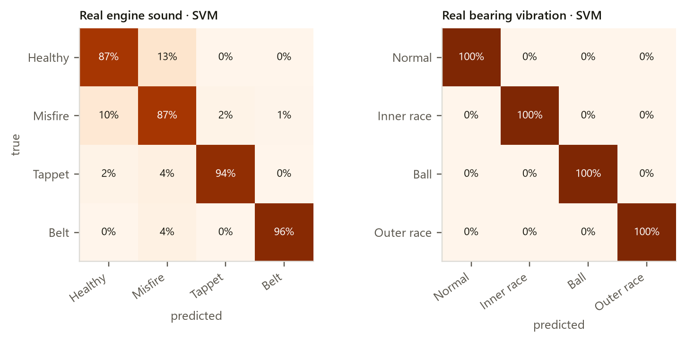
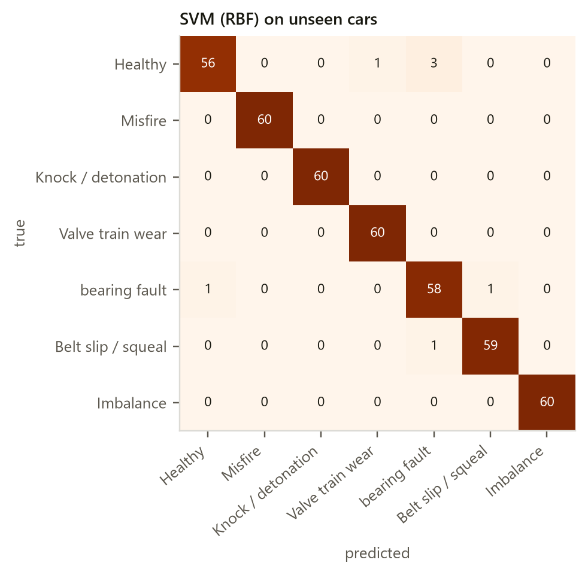
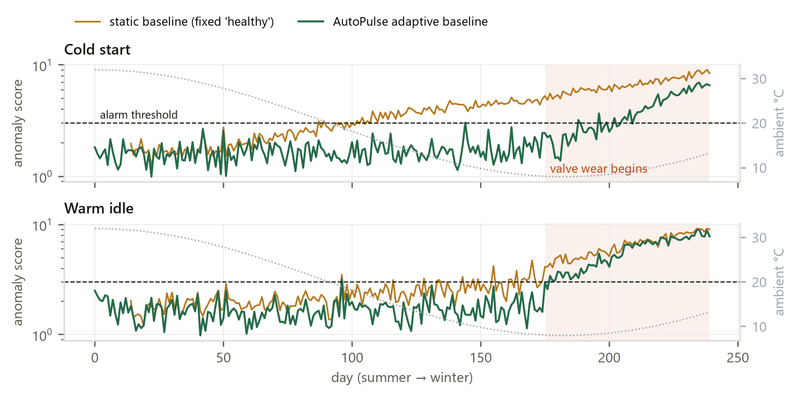
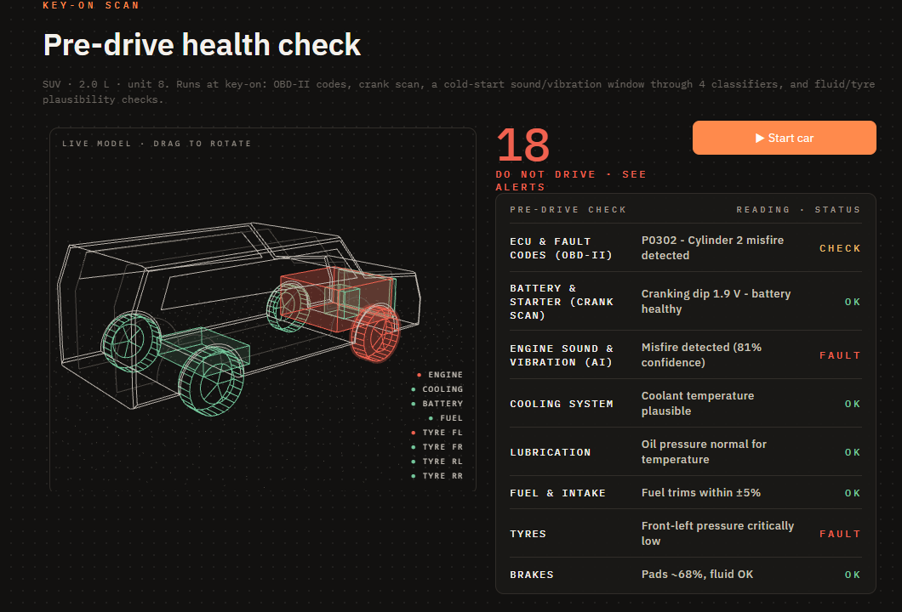
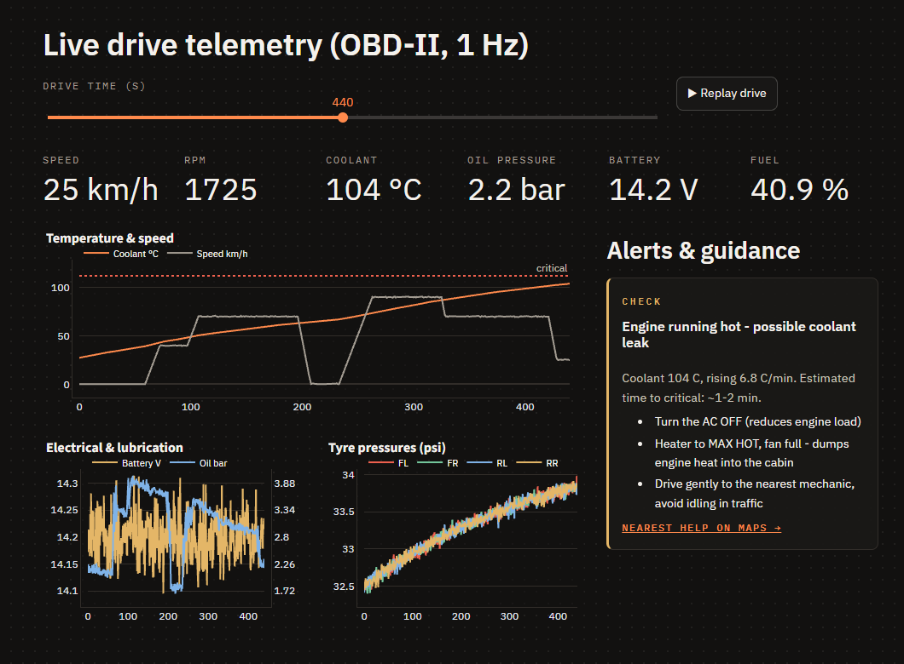
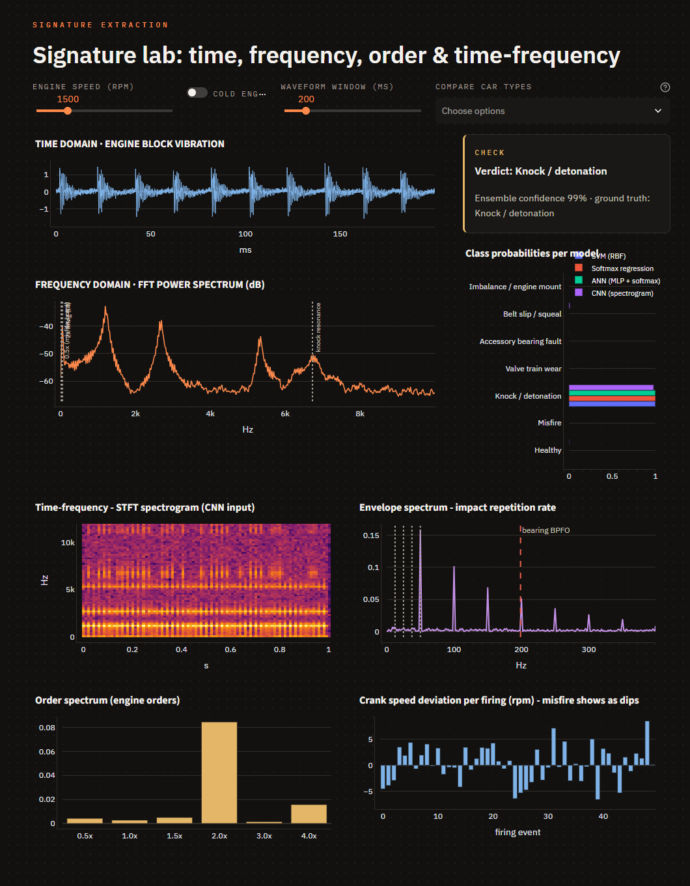

Your car's heartbeat, read by the sensors it already has. AutoPulse listens to engine sound, vibration and ECU telemetry, extracts their signatures in time and frequency, learns what is normal for this car, and tells the driver what to do before a fault becomes a breakdown.
AutoPulse turns the signals a car already produces into an early-warning health system: it extracts signatures from sound, vibration and ECU data, recognises faults with machine learning, and guides the driver in plain language.
Most breakdowns announce themselves early. A failing valve ticks, a weak cylinder slows the crankshaft for a few milliseconds, a leaking cooling system warms a little faster every day. The signals exist; nobody is reading them. AutoPulse reads them continuously, compares them with what is normal for this particular car, and separates normal ageing (shown like a phone's battery health) from a real fault (an alert with a cause and an action).
Knock rings at the cylinder's resonance (~6–7 kHz), a misfire leaves a half-order dip in crank speed, a bearing repeats at its defect frequency. We extract these explicitly, so every alert can be explained.
A winter cold start sounds different from a summer idle, and engines age. AutoPulse learns normal per car and per context, and only flags what doesn't fit.
About 70% of the sensing already exists behind the OBD-II port. The rest comes from the driver's phone and a cheap clip-on kit, not F1-style custom hardware.
Hard safety limits never adapt. When one trips, the driver gets the action: turn the AC off, how many minutes of battery remain, where the nearest tyre shop is.
The brief asks for three things in order: extract signatures from raw multi-sensor engine data, recognise patterns with machine learning, and present both on a dashboard.
| The brief says | What it means | How AutoPulse answers it |
|---|---|---|
| Isolate frequency, time-domain or electrical patterns (signatures) from raw sensor data | The DSP core: turn raw waveforms into features that a fault changes | 28 signature features per window: time statistics, FFT band energies, engine-order amplitudes, Hilbert envelope, STFT spectrogram, crank-speed irregularity (section 07) |
| Spot normal operational baselines | Anomaly detection trained on healthy behaviour | Adaptive per-car, per-context baseline that absorbs ageing and seasons but not faults (section 09) |
| Predict component wear | Slow degradation trends and remaining useful life | Health % per component with trend extrapolation, e.g. battery replacement in ~N months (section 09) |
| Identify real-time faults | Classify the fault now | CNN on spectrograms; SVM, ANN and Softmax on signature features; ensemble vote (section 08) |
| Microphones, accelerometers, ECU / OBD-II / CAN telemetry | Three data families, fused | Ten engine streams plus six vehicle streams, mapped to where they sit on the car (section 04) |
| Simulink / MATLAB or synthetic / open data | No hardware build is expected | Hybrid: our physics generator + public datasets, plus a MATLAB crankshaft simulation as an independent check (section 11) |
| Dashboard with signatures and recognised patterns | Show the evidence, not just the verdict | Startup health check, live telemetry, signature lab, baseline and wear views (section 12) |
The brief is about combustion-engine data. Brakes, tyres and battery are extensions; engine signatures come first.
An EV has no knock, misfire or valve sound. We borrow the pre-drive check and plain-language alerts; the sensing is ours.
Data comes from simulation and public sets. The low-cost sensor tiers in section 05 show the design would survive contact with a real car.
An F1 car carries roughly 150–300 sensors and streams about a million data points a second to the pit. We take its habits, not its hardware: plausibility checks between sensors, component-life budgets, and overlaying today's signal on a reference. From road cars we take GM OnStar's proactive alerts (battery, starter, fuel pump), BMW's condition-based service, and the OBD-II rule that already checks fuel-vapour leaks by pressure decay instead of a gas sensor.
Four stages: sense, extract signatures, recognise patterns, guide. Raw values also bypass the learning stages and go straight to the safety rules, so a hard limit never waits for a model.
Ten engine streams carry the signatures the brief asks for; six vehicle streams extend AutoPulse to the rest of the car. Colour shows how each one is obtained.
| Stream | Sensor · where | What it reveals | Rate | Source |
|---|---|---|---|---|
| 1Engine sound | MEMS microphone in the engine bay, or the phone in the cabin | Knock, tappet tick, belt squeal, exhaust leak, bearing whine | 16–48 kHz | T1 T2 |
| 2Block vibration | Accelerometer, magnet-mounted on the engine block | Misfire, mounts, imbalance, bearings, valve train | 10–25 kHz | T2 |
| 3Knock sensor | Piezo sensor already bolted to the block; read as ECU timing retard | Detonation, wrong fuel grade, carbon build-up | 5–20 kHz band | T0 |
| 4Cylinder pressure | Not fitted to road cars. Simulated with a Wiebe burn model as ground truth | Combustion quality; explains every other signal; labels for training | per crank ° | SIM |
| 5Crank speed | 60-2 tooth wheel with a Hall / VR sensor at the crank pulley | Misfire per cylinder, imbalance, timing-chain stretch (vs cam) | per tooth | T0 |
| 6Speed, throttle, load | OBD-II PIDs 0C, 11, 04 | Context for every signature; driver demand | 1–10 Hz | T0 |
| 7Air flow, manifold pressure | MAF and MAP sensors · PIDs 10, 0B | Vacuum leaks, clogged air filter, valve sealing | 1–10 Hz | T0 |
| 8Mixture: λ and fuel trims | Upstream / downstream O2 sensors · PIDs 06–09, 24–2B | Vacuum leaks, injectors, fuel pump, catalyst efficiency | 1–10 Hz | T0 |
| 9Exhaust / catalyst temp | Catalyst temperature · PIDs 3C–3F | Misfire damage risk, catalyst health, ignition retard | 1 Hz | T0 |
| 10Coolant temperature | ECT sensor · PID 05 | Thermostat, coolant leak, overheating | 1 Hz | T0 |
Derived (virtual) streams: torque and shock torque from crank speed and the pressure model, and an emissions estimate (NOx, CO, HC) from λ, temperatures and ignition advance.
| Stream | Sensor · where | What it reveals | Source |
|---|---|---|---|
| ABattery voltage, cranking current | System voltage (PID 42); clip-on battery monitor or Hall clamp | Battery health, starter wear, alternator diodes, relative compression per cylinder | T0 T2 |
| BPhone IMU and GPS | Driver's phone in the dash mount | Braking effectiveness, damper wear, location for nearest help | T1 |
| CWheel speed × 4 | ABS sensors on CAN, or valve-cap TPMS | Puncture, slow leak, tyre wear, wheel bearing | T0 T2 |
| DOil pressure | Existing oil-pressure sensor (manufacturer PID) | Pump or bearing wear, oil loss | T0 |
| EFuel level, fuel rate, EVAP pressure | PIDs 2F, 5E, 32 | Liquid fuel leak, vapour leak, range | T0 |
| FCabin CO | Small CO sensor in the cabin | Exhaust gas entering the cabin (safety) | T2 |
A dedicated sensor for every fault would make an F1 car: precise, expensive and fragile. AutoPulse reads what the car already measures, adds a few commodity parts, and infers the rest from physics.
OBD-II port + a Bluetooth dongle. ECU sensors, fault codes and the ECU's own self-test results.
Microphone, accelerometer, gyro, GPS, camera. Already in every pocket.
Engine-bay MEMS mic, magnetic accelerometer, battery monitor, valve-cap TPMS, CO sensor. All off the shelf.
Oil-quality sensor, decoded CAN for ABS and brake pressure, IR temperature.
| Instead of… | AutoPulse uses… | Because… |
|---|---|---|
| A fuel-vapour gas sensor | EVAP pressure decay (stream E) | Seal the system, pressurise it, time the decay. A leak drops pressure faster. OBD-II already mandates this test |
| Tyre pressure sensors | ABS wheel speeds (C) | An under-inflated tyre has a smaller rolling radius, so it spins faster than the other three |
| A compression gauge | Cranking current ripple (A) | Each compression stroke loads the starter; a weak cylinder makes a smaller current hump |
| In-cylinder pressure sensors | Crank angular speed (5) | A cylinder that doesn't fire stops pushing, so the crank slows for that firing event |
| Opening the timing cover | Cam vs crank phase (5) | A stretched chain makes the cam lag the crank by a growing angle |
| A smoke test for leaks | Fuel trims vs load (7, 8) | Unmetered air at idle makes the ECU add fuel; the trim normalises under load |
| A thermostat test | Coolant warm-up curve (10) | A thermostat stuck open stretches the warm-up time constant |
| A fuel-leak detector | Fuel level vs fuel burned (E) | If the tank empties faster than the engine burns fuel, the difference is leaking |
| Duplicate sensors | Analytical redundancy (6, 7) | Predict MAF from MAP, RPM and throttle. If the measured MAF disagrees, the sensor itself is suspect |
Every reading is cross-checked against a physical model built from other sensors. A disagreement is reported as a sensor fault, not a car fault. The system checks its own instruments, as F1 telemetry does.
Fourteen common failures, the physics that betrays each one, and the streams that see it. Every fault is covered by at least one Tier 0 or Tier 1 stream, so the kit is an upgrade, not a requirement.
| Fault | Physical signature | 1 | 2 | 3 | 4 | 5 | 7 | 8 | 9 | 10 | A | C | D | E |
|---|
● primary evidence ○ supporting evidence. Stream 6 (speed, throttle, load) is context for every row.
Each fault changes a different view of the signal. These plots come from our own pipeline, running on an engine the models never trained on.


| Domain | Features | Best at |
|---|---|---|
| Time | RMS, peak, crest factor, kurtosis, skewness, zero-crossing rate | Impacts (high kurtosis), overall level |
| Frequency (FFT) | 10 band energies, spectral centroid, flatness, knock-band kurtosis | Knock, belt squeal, resonances |
| Order (crank-locked) | Amplitudes at 0.5×, 1×, 1.5×, 2×, 3×, 4× engine speed | Misfire (0.5×), imbalance (1×), firing (2× on a 4-cylinder) |
| Envelope | Dominant repetition rate and its prominence | Bearings, valve tick |
| Time-frequency (STFT) | 64 × 95 log-power spectrogram | CNN input: patterns that change within a cycle |
| Crank speed | Irregularity and deepest dip per window | Misfire, cylinder imbalance |
All four model families the brief names are trained and scored twice: on real recordings, which is the score that counts, and on simulated engines held out of training.
| Dataset | Model | Accuracy (± fold std) | Macro F1 | Per recording |
|---|

| Model | Input | Accuracy | Macro F1 |
|---|
1,680 training windows from 8 simulated engines; 420 test windows from 2 different engines. The simulator is cleaner than a real engine bay, so these are upper bounds.

Strong with few, well-designed features. Our current best, and easy to deploy on a phone.
Multinomial logistic regression. The transparent baseline: its weights show which signatures matter.
A small MLP with a softmax output. Learns feature interactions the linear model misses.
Learns from the spectrogram image directly. Weakest on real audio today; it needs more real data to catch up.
The dashboard shows all four votes side by side and an ensemble verdict. A fault the models disagree on is reported with lower confidence instead of being hidden.
A fixed "healthy" baseline fails on real cars: cold starts get noisier in winter and engines age. AutoPulse learns normal per car and per context, and still catches a real fault within days.
What any healthy engine of this type does. Works on day one, and catches a fault that was already present when AutoPulse was installed.
Learned over the first ~10 drives, then updated slowly. The car's own fingerprint.
Cold start vs warm idle, RPM band, load, AC, ambient temperature. A cold start is compared with past cold starts.

| Held-out real trips | Adaptive · alarmed | Delay (min) | Static · alarmed | Delay (min) |
|---|
Some conditions are dangerous whatever the car's normal is. A rule engine above the models fires instantly and tells the driver what to do, using the phone's GPS for the nearest help.
| Condition | Detected from | Level | What the driver is told |
|---|---|---|---|
| Tyre puncture | Pressure falling fast, or a sudden wheel-speed mismatch | Critical | Slow down, hazards on, pull over. Nearest tyre shop with distance and a call button |
| Oil pressure lost | Oil pressure below the floor at running RPM | Critical | Stop the engine now. No range shown: continuing destroys the engine in minutes |
| Overheating / coolant leak | Coolant level and rate of rise | Warning | AC off; heater to max hot, fan full; estimated minutes to critical; nearest mechanic |
| Alternator not charging | Voltage below 13 V while running | Warning | Minutes of driving left on the battery, with and without non-essentials; don't switch off |
| Serpentine belt broken | Voltage falling and coolant rising together | Critical | Pull over: two belt-driven systems are failing at once |
| Fuel leak | Fuel level falling faster than fuel burned | Critical | Stop in the open, engine off, don't restart, move away |
| Severe misfire | Misfire rate (crank speed, ECU self-test) | Warning | Reduce load, avoid the highway: the catalytic converter is at risk |
| Carbon monoxide in cabin | Cabin CO sensor | Critical | Open windows, pull over, engine off |
| Low fuel | Fuel level ÷ recent consumption | Info | Range in km and the nearest fuel stations |
Coolant 104 °C, rising 1.8 °C/min. Estimated time to critical: ~4–8 min.
Front-left at 18 psi and falling 15 psi/min.
Alert mock-ups as the dashboard renders them. Distances are illustrative; the prototype opens a live map search. Time estimates are always shown as a range, because they are extrapolations.
No public dataset records sound, vibration, crank speed and OBD from the same faulty engine. So we simulate the full set with physics, and use real datasets to calibrate the simulator and to test every model.
| Source | What it gives us | Streams | Access |
|---|---|---|---|
| carOBD | Real 1 Hz OBD-II logs (Toyota Etios): RPM, throttle, load, coolant, trims, λ, timing, MAP, catalyst temps. Drive cycles for the generator | 6–10 | Free, ready today |
| UFPB acoustic fault dataset | Ford Fiesta 1.6 petrol, mic at 44.1 kHz, 12 classes incl. misfire and belt faults, 2,148 one-second clips | 1 | IEEE DataPort login |
| Engine condition (HF) | 19,535 rows: RPM, oil and fuel pressure, coolant pressure and temp, oil temp, good/faulty label | 10, D | Free; licence unstated |
| CWRU · Paderborn · MAFAULDA | Real bearing and rotating-machine vibration; Paderborn adds motor current, MAFAULDA a microphone | 1, 2 | Free (Paderborn non-commercial) |
| Engine main-bearing vibration | Vibration from engine main bearings across operating conditions | 2 | Mendeley; to verify |
| EngineAD | 25 commercial vehicles, 6 months, 13 engine signals, expert anomaly labels | 6–10 | Free (Borealis) |
| IoT Vehicle Telemetry | 3 months of RPM, throttle, coolant, fuel use | 6, 10 | IEEE DataPort |
| AudioSet "engine knocking", Activa 6G audio | Rough-labelled knock clips; healthy vs faulty scooter engine sound | 1 | Free / DataPort |
| MathWorks misfire example | SI engine with misfire injection, cylinder pressure vs crank angle, OBD misfire logic | 4, 5 | Needs Powertrain Blockset |
| Cantera IC engine example | Free thermodynamics to shape pressure and emission curves offline | 4, emissions | Free |
Dataset survey and generator design steps 1–7 come from our team's data-sources and simulation plan.
MATLAB solves J·dω/dt = Σ gas torque − load torque for a 4-cylinder engine (firing order 1-3-4-2) and records crank speed as a 60-2 tooth wheel would.
MATLAB recomputes our signature features from first principles on real engine recordings, and Python compares them feature by feature.
Our college licence covers Simulink, Powertrain Blockset, AUTOSAR Blockset and Signal Processing Toolbox; installing them next unlocks MathWorks' own misfire example and the five filter-based features.
A working prototype already runs end to end: generator, signatures, four models, the adaptive baseline and the safety rules, behind one dashboard.



Round 1 delivers the understanding, the design and a working pipeline on synthetic data. Round 2 proves it on real data. The final shows it on a real car.
Generator v2: Wiebe pressure, crank dynamics, resonances, slow streams, emissions. Simulink cross-check.
carOBD drive cycles, UFPB audio, bearing sets. Calibration and honest real-data test splits.
Four classifiers, adaptive baseline, wear and RUL models, evaluation reports.
Startup check, alerts and guidance, signature lab, the demo and this report.
Three things would speed us up; everything else is in our hands.